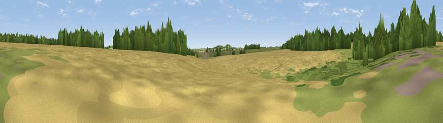

Dean Hill
#46004 in England · top 99% of its area beats it · near WitchamptonWhere it is
The exact computed spot (ST 96750 06921). Click the marker for map links.
The view, rendered

A 360° render of this exact spot computed from the terrain model, tree cover and land cover — summer colours, afternoon light, calibrated against photographs of famous viewpoints. Real trees, hedges and buildings will differ in detail.
The panorama
Grey silhouette: terrain skyline in each direction (720 bearings, Earth curvature and refraction included). Dashed green: skyline with trees (+15 m) and buildings (+8 m) as obstacles. Blue strip: how far the ground is visible on each bearing.
Where the view opens
Wedge length = distance to the farthest visible ground on that bearing (vegetation-aware). Rings at 10, 25 and 50 km.
What fills the view
76% cropland · 13% woodland · 10% grassland
Angular shares of the visible panorama (visual magnitude), not map area. Landscape diversity 0.32 (0–1 Shannon).
Key numbers
More beautiful places nearby
The staircase of upgrades: each row has a higher view potential than everything closer. Driving times are estimates from straight-line distance, calibrated against real road routing — check an actual route before setting out.
| Place | Direction | Drive | Score |
|---|---|---|---|
| Viewpoint near Tarrant Rushton | W · 2 km | ~6 min | 43.0 |
| Viewpoint near Hinton Parva | S · 4 km | ~9 min | 43.4 |
| Badbury Rings | S · 4 km | ~9 min | 53.0 |
| Chalbury Hill | E · 5 km | ~11 min | 56.5 |
| Viewpoint near Corfe Mullen | S · 12 km | ~22 min | 60.9 |
| Viewpoint near Cranborne | NE · 12 km | ~22 min | 65.0 |
| Hambledon Hill | WNW · 13 km | ~24 min | 72.7 |
| Hambledon Hill | WNW · 13 km | ~25 min | 74.6 |
50.86179, -2.04754 · source: osm peak · position refined by local search. Computed location — check access rights before visiting.